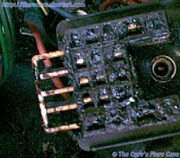
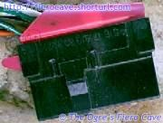
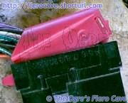

Go Home
Site Map
Go Home
Site Map
Terminal Position Assurance
Many people know that the terminals of various connectors can be released from the body for service or rewiring. Many GM/Packard/Delphi connectors have two(2) locks holding the terminal in the shell/block.
If you look at the Weather Pack page, you'll see I called the back cover Terminal Position Assurance (TPA) and I told you it makes the connection stronger. Other connectors, like C100 and C500 also have TPA but it usually a separate part. No matter what type of TPA is used, you must defeat it before you will be able to release the terminals from the connector body.
Bulk TPA
We'll only cover a couple types of bulk connectors but you can safely assume most others have some sort of TPA. The TPA can be automatic like the Weather Pack cover or a separate part.
C500
I'll assume you've figured out the covers on C500 but to summarize... The engine side covers have tabs you release. Once you take out the two mounting screws, the body side connector has two ears you squeeze (on the closed end) and then the cover slides off.
Like most bulk connectors, the C500 terminals are secured in the shell by a TPA clip. Before you can release the terminals, you have to remove the TPA clip. There are 4 TPA clips in C500, two in each half. Most of the time you can clearly see these but C500 is covered in grease and dirt... One is shown partly removed from the body half below.
To get the clip out... look in the area where the bolt goes thru. You will usually see at least some of the ends poking thru. GENTLY work the small ends until you can grab the big end.
Once the clip is out, the terminals are released by inserting a small wire into the notch next to the terminal face. The release wire should just fit in the notch. If you look at the image, the notch is above each terminal. When the release wire bottoms in the notch, pull the terminal and its wire out the back.
When you push the wire back in. pull and see if it comes right back out. If it does you flattened the tab too much and need to bend it out just a hair.
If you have trouble pushing the wire in with all the grease, GENTLY use a small screwdriver to seat it. Once the wires are all seated, insert the TPA clip.
Most connectors with flat terminals use the same method for releasing the individual male and female terminals. Switch connectors, headlight plugs, and many others. The notable exception are the MetriPack 150 "Pull to Seat" connectors in the main article, which force you to cut wire to get them apart.
Board Edge plugs
This is one of the board plugs used on some later ECM units, like the 1227748 unit used with the DIS L4 engine.
The Cover of this plug also serves as the TPA. To open the cover, press the two small latches in the closed end of the body.
Once the cover is off, the terminals are a little tricky. As you look at the face of the connector body, you will see that the metal terminal forms a C shape around a small bit of plastic and a square opening. Insert the release wire into that little hole to release the terminal.
